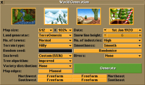

Creating Maps

You press Generate and done.
While this might be one of the most key obstacles to get over when creating a map, there is a few more things to be talked about. And exactly that is in the piece of text I would like to share with you here. Originally I planned to post another article as usual, but for some reasons I found out it might be more comfortable to post it as a pdf – so here it is! Without further introduction which is inside, I present to you:
Creating maps for and from openttdcoop environment
Please note that it is all just my experience and the way how I have been doing it for some time; if you disagree with anything, use the methods you like best, or just ask me for further explanations. I would greatly appreciate any form of feedback however, be it criticism, questions or just random thoughts. This is supposed to be a guide, more like my notes and a part of my experience, not a rule set. I wish you a nice read and I hope you will find it useful, especially those who are interested in this topic. (I doubt anyone else is going to read it 🙂 )
V453000
Categories: Gameplay, NewGrf, OpenTTD, Public Server
LoPo October 16, 2012 17:50
wow, nice article 🙂
it’s indeed longer than the other articles you have posted, but there again this one also covers a lot more than only one prime thing. I think making ‘nice’ but especially ‘good’ – read; a good mix of GRF, challenging terrain, etc. – can be a thing to master on it self indeed.
After having a quick glimpse of the majority pieces inside the article, there are maybe some thing I would do differently, but in overall I like it 🙂
LoPo
grim4593 October 17, 2012 00:35
That was a nice document! I read the whole thing and learned quite a few things.
Dom October 19, 2012 14:11
nice Article!! helped me alot, normally i screwed up most of my maps xD
Louis November 7, 2012 11:19
Great read, really helpful and gave a great insight into GRF’s and map generation techniques. Learned a lot 🙂
Louis
planetmaker December 16, 2012 10:04
Good job. I only wished it’d be in a maintainable form of a wiki page, thus that it could be kept up to date. Blogs and pdfs are not well suited for that.
V453000 December 16, 2012 12:29
Thanks!
I know, I myself find that as quite a disadvantage, but since I saw how long it is getting I figured it would be simplier this way, at least for now … perhaps some paged/systematized version for wiki would be nice…